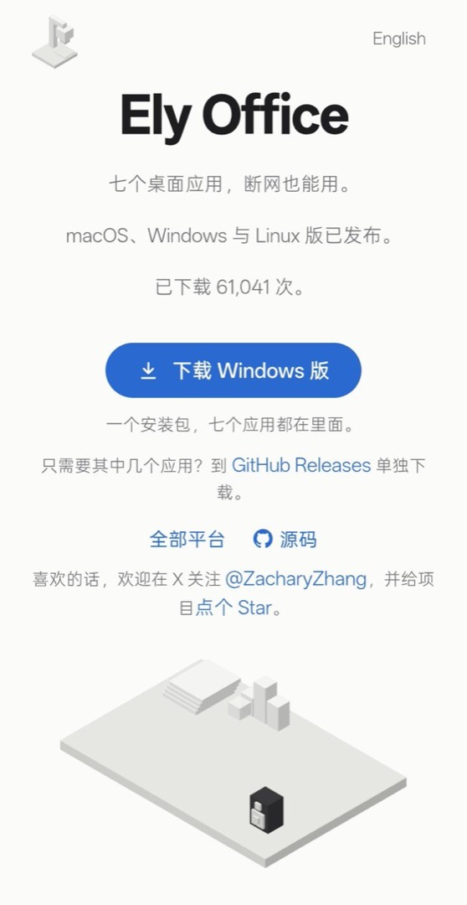
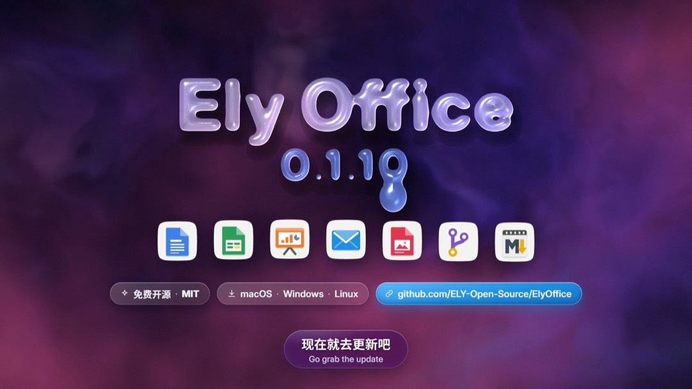
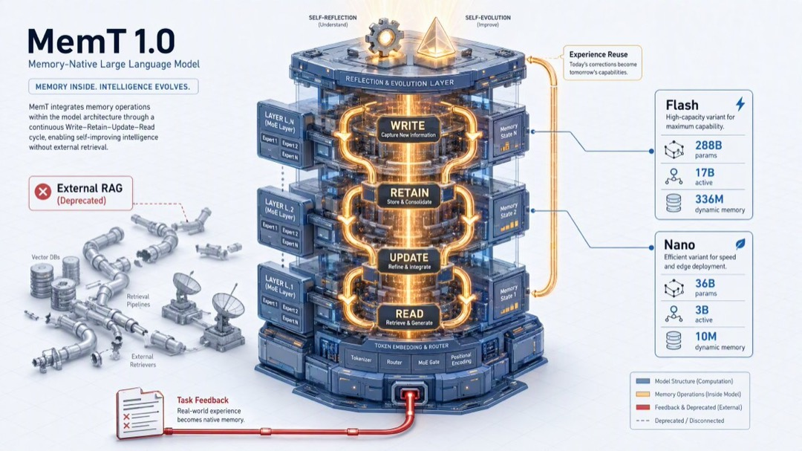
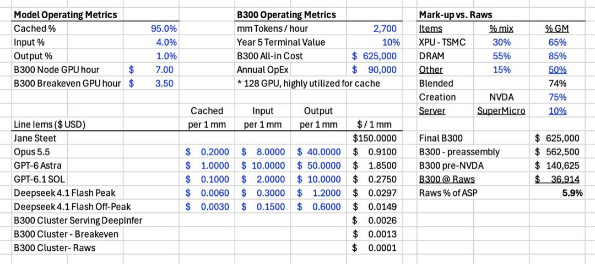
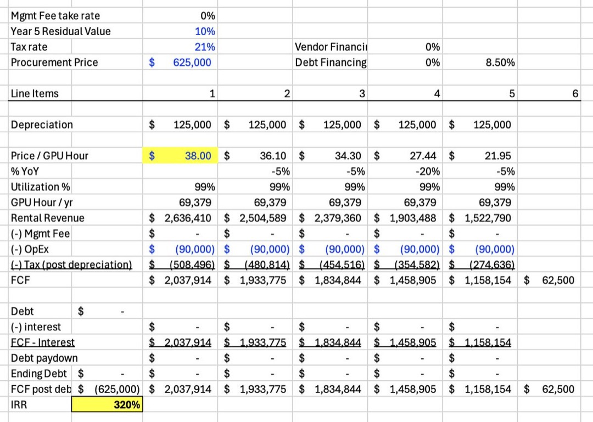

本期速览
01 Sören加盟清华AI安全教授席
02 CS2680课程从Agent贯通到GPU
05 TiDB遭入侵泄露10TB客户数据
07 MemT 1.0把记忆内化进模型
08 OpenAI发布PHP漏洞自查技能
10 PHP 8.5.12发布含安全修复
01｜Sören加盟清华AI安全教授席
来源（X） · @MaxForAI · 2026-10-21 19:17
10月20日，AI安全研究者 SörenMindermann （索伦·明德曼） @sorenmind 发文宣布，他将于11月搬到北京，加入清华大学人工智能学院担任助理教授，同时继续在剑桥大学的研究工作。
简单介绍一下他的背景：牛津大学机器学习博士，博士后导师是18年图灵奖得主Yoshua Bengio，曾任《国际AI安全报告》科学负责人，目前是剑桥大学人工智能科学与政策项目CASP的技术研究负责人。
他也参与过模型“伪装对齐”、潜伏智能体等研究。
他提到，一些美国同行觉得学术界对AI已经没那么重要了。
但在中国，顶尖高校的学者依然深度参与产业、政策和人才培养。
这也是他看重清华的原因。
另一个让他在意的细节是，按照他的描述，姚期智领导下的学院支持以实际影响为导向的跨学科研究，对研究成果的期待，也没有建立在数顶会论文篇数上。
今年7月，清华启动了“清智人工智能安全枢纽”（BASH），提供共享办公、国际研究者来访、青年人才培养和双向交流，重点关注对齐、评估、可解释性和失控风险建模。Mindermann目前担任这个枢纽的联合主任。
他的研究计划里，有一项我尤其关注，也和RSI直接相关：当AI越来越多地参与AI研发，人类如何继续有效监督？模型会不会操纵自己参与开发的下一代模型，或者破坏原本用来约束自己的流程？
引用内容
Sören Mindermann @sorenmind
中文译文
很高兴宣布，我将搬到北京，开始在清华大学人工智能学院担任AI安全方向的教授！
我在这里解释了原因：https://sorenmindermann.substack.com/p/why-im-becoming-a-professor-in-ai
原文
Excited to announce that I’m moving to Beijing and starting a professorship in AI safety at Tsinghua University’s College of AI!
Here I explain why: https://sorenmindermann.substack.com/p/why-im-becoming-a-professor-in-ai
02｜CS2680课程从Agent贯通到GPU
来源（X） · @Alinsees · 2026-10-21 23:21
非常推荐 Harvard 的 CS2680 Modern AI Systems 。课程从 Claude Code、Agent Loop、Eval 和 Token 成本开始，一路往下做到模型部署、Routing、KV Cache、量化和 speculative decoding。
作业设计也很有巧思，5 个作业都围着同一个 Agent 系统往下拆，先看它怎么工作，再自己搭 Harness，最后一路优化到推理层。
感觉它更像是在回答一个问题：
一个现代 AI Agent，到底是怎么从应用层一路跑到底层系统的？
做 Agent、Harness、AI Infra 的可以收藏。
03｜RSI专题拆解递归改进路线
来源（X） · @alacheng · 2026-10-21 21:25
引用内容
青稞社区 @qingke_ai
1. RSI与AI for AI的边界
系统级工程优化：RSI不仅指模型自我改进，更强调AI对数据构建、模型训练及推理优化等整个系统工程的递归改进，最终产出更强的模型。
Meta AI构建Task AI：当前业界大量实践属于AI for AI，即利用一个强大的Meta AI去构建和优化特定领域的Task AI，这被视为广义的RSI。
研发占比作为务实指标：OpenAI的技术报告提出以AI在研发下一代模型中的参与百分比作为衡量RSI进程的务实标准，占比达到100%即代表完全脱离人类干预。
2. 递归与迭代的本质区别
闭环反馈机制：递归的核心在于改进后的系统能直接投入到下一轮的改进中，形成自我强化的闭环，而非简单的循环迭代。
数据作为媒介：模型通过生成新数据并从中获取训练信号来提升自身性能，是实现自我递归改进的关键路径。
二、RSI的技术路线与演进方向
1. 四大核心改进维度
Policy与Harness优化：涵盖模型权重与外围工具、记忆等组件的优化，是当前Agent系统与Test time阶段的主要发力点。
训练算法与任务环境：包括模型架构、基础设施的改进，以及让AI学会设计并诊断自身执行环境，实现环境层面的自我进化。
2. 数据与基础设施的演进
数据驱动范式：高质量数据始终是模型提升的必然需求，通过自动化构造环境与数据，提出继人工设计之后的新型数据生成范式。
进化式搜索机制：引入搜索树等机制管理历史探索轨迹，提升单步解的搜索效率，未来期望由大模型自主决定搜索策略。
高效迭代基础设施：通过提升吞吐量与采用轻量级的LoRA多适配器机制，实现模型版本的快速切换与持续迭代。
三、当前技术瓶颈与挑战
1. 诊断与搜索效率瓶颈
缺乏宏观视角：当前Agent在诊断系统失败时多倾向于从底层细节入手，缺乏人类自上而下的宏观洞察力，易导致优化路径低效或过度拟合。
搜索与学习信号受限：Agent在探索新方案时缺乏新颖性奖励机制，且长程任务中的信用分配问题导致难以奖励前期失败但最终成功的路径。
2. 环境与长程记忆瓶颈
物理环境反馈缓慢：数字世界数据已被大量消耗，模型向物理世界（如AI for Science）拓展时，湿实验等长周期反馈严重制约了学习迭代效率。
缺乏长期记忆能力：当前模型架构难以在超长推理或阅读大量文献后积累并继承“品味”与“感觉”，限制了其进行深度研究与自我进化的能力。
四、评测基准与监控体系
1. 现有评测基准的局限性
运行成本高昂：现有RSI评测基准（如Post Train Bench）运行时间极长，导致评测成本与时间成本过高，难以进行高效的快速优化。
缺乏长程与多元评估：现有基准多关注固定预算下的单点性能，缺乏对长期持续改进斜率的评估，以及真实商业场景中速度、资源消耗等多元帕累托指标的考量。
2. 工业界监控与评测实践
全链路轨迹监控：工业界更关注Agent优化的全过程轨迹监控，利用Langfuse等工具详细记录Token消耗、回复速度等指标，以辅助Agent进行针对性优化。
分模块评测趋势：面对高昂的端到端评测成本，社区开始将后训练拆分为多个重要子问题，分别进行针对性评测以提升优化效率。
五、未来演进形态与人的角色
1. 演进形态与实现预期
连续演进过程：RSI是一个连续的光谱，而非某一刻的突变，随着AI研发占比的不断提升，最终实现全自动化的模型迭代与工具创造。
实现时间预期：业界普遍预期在未来几年内（如1至3年）实现高度自动化的AI研究员与商业交付闭环，完全脱离人类干预的递归进化预计在2028年前后。
2. 人类角色的转变
需求建模与方向把控：人类将从具体的执行者转变为系统性的需求建模者，负责决定AI模型应向哪个方向提升。
提出洞察与审核评价：人类将更多依赖创造力提出新想法，并承担最终的审核与评价角色，确保AI的研发方向符合人类价值观与安全要求。
@HBX_hbx
@qiancheng1231
@ChengsongH31219
@OkhayIea
@junlin45300
@XiaotengMa1996
https://youtu.be/DXgfbMpiM3I?si=dgV8BRJA_LLJ-h9j
04｜ElyMail加入开源Office套件
来源（X） · @ZacharyZhang · 2026-10-22 12:23
感谢大家！！破 6w啦！ 每天超高强度的更新，最终也没有辜负我的努力。
希望大家可以多多转发呀！！！你们的转发和星星其实就是我一直不停狂肝的动力，我并不需要任何回报。
希望有朝一日可以破 10 万哈哈哈哈哈！！！
我为什么要MIT开源？
我非常喜欢 @dhh 说过的一句话: MIT是一个完美的许可证，这是一种给予而不期待任何回报的表达。在我看来，开源项目就是对世界的馈赠，本就不应当收取回报。
我为什么要做这一套东西？
微软Office太过臃肿，WPS在我订阅会员之后依然天天给我跳一堆通知和AI广告，OnlyOffice和Libreoffice又太丑。
正好，创建了ELY GPUI(http://elygpui.com)这个有接近 1300 个组件的组件库，所以为了证明我的组件库确实可以做到事情，所以我只做了这个带有Word, Excel, PPT, 邮件客户端，Markdown编辑器，PDF编辑器，Git客户端的 7 个完整应用。这两个项目算是我倾注了非常多心血，努力和爆炸量的Token。
我也真心希望大家喜欢，可以给我提交Issues以及PR，我会努力去Fix Everything。

引用内容
雷电芽衣 @ZacharyZhang
中文译文
http://office.elygpui.com
https://github.com/ELY-Open-Source/ElyOffice
ELY Mail 来了！！！Intel Mac 和 NixOS 也来了！！
ELY OFFICE 0.1.10 更新！
新平台：
Intel Mac：macOS 现有 Intel 版，与 Apple 芯片版一样签名并公证（#3）。
Nix：仓库根有 flake.nix，每个应用一个包，default 为全部（x86_64-linux，#13）。
新应用：
ElyMail 首发：Gmail、Microsoft（OAuth 登录）、iCloud（应用专用密码）、IMAP 与 POP3；会话、草稿、发件箱、搜索、规则、联系人、MBOX 与 EML 导入导出、离线文件夹；关窗留在托盘，新邮件有系统通知。
新功能：
Windows 与 Linux 的应用内更新（#10）。deb、rpm、Arch 包提示升级命令。
Windows 合集安装程序可选安装位置（#11）。
ElyTable：文字颜色、"文本"数字格式、双击行列边界最适、拖动边界时显示参考线、拖选越出视图自动滚动；ElyTable 与 ElyShow 的"编辑"菜单有撤销、重做（#15）。
ElyDoc、ElyTable 有滚动条（#18）。
ElyMark：长文有滚动条（#8），源码模式可显示行号（#9）。
修复：
ElyTable：合并全是空格的单元格报错（#12）。
ElyDoc：选字体后中文不变（#7）。现照 Word 同时设西文与中文字体。
ElyPDF：改一个字后旁边的文字移位（#17）。
macOS 与 Linux 上拖不动 ElyDoc 表格边线。
原文
http://office.elygpui.com
https://github.com/ELY-Open-Source/ElyOffice
ELY Mail is here!!! Intel Mac and NixOS also here!!
ELY OFFICE 0.1.10 UPDATE!
New platforms:
Intel Mac: macOS now has an Intel build, signed and notarized like the Apple silicon one (#3).
Nix: flake.nix in the repository root, one package per app, default for all of them (x86_64-linux, #13).
New app:
ElyMail: Gmail and Microsoft (OAuth sign-in), iCloud (app-specific password), IMAP and POP3; conversations, drafts, outbox, search, rules, contacts, MBOX and EML import and export, offline folders. Closing the window keeps it in the tray, and new mail shows a system notification.
New:
In-app updates on Windows and Linux (#10). deb, rpm and Arch packages show the upgrade command.
The Windows suite installer lets you choose where to install (#11).
ElyTable: text colour, the Text number format, double-click a row or column border to autofit, a guide line while dragging a border, auto-scroll when dragging a selection past the edge; Undo and Redo in the Edit menu of ElyTable and ElyShow (#15).
Scrollbars in ElyDoc and ElyTable (#18).
ElyMark: a scrollbar for long documents (#8), and line numbers in source mode (#9).
Fixes:
ElyTable: merging cells that were all empty failed (#12).
ElyDoc: choosing a font left Chinese text unchanged (#7). It now sets both the Western and the Chinese font, as Word does.
ElyPDF: editing one character moved the text beside it (#17).
Table borders in ElyDoc could not be dragged on macOS and Linux.
新平台：
Intel Mac：macOS 现有 Intel 版，与 Apple 芯片版一样签名并公证（#3）。
Nix：仓库根有 flake.nix，每个应用一个包，default 为全部（x86_64-linux，#13）。
新应用：
ElyMail 首发：Gmail、Microsoft（OAuth 登录）、iCloud（应用专用密码）、IMAP 与 POP3；会话、草稿、发件箱、搜索、规则、联系人、MBOX 与 EML 导入导出、离线文件夹；关窗留在托盘，新邮件有系统通知。
新功能：
Windows 与 Linux 的应用内更新（#10）。deb、rpm、Arch 包提示升级命令。
Windows 合集安装程序可选安装位置（#11）。
ElyTable：文字颜色、“文本”数字格式、双击行列边界最适、拖动边界时显示参考线、拖选越出视图自动滚动；ElyTable 与 ElyShow 的“编辑”菜单有撤销、重做（#15）。
ElyDoc、ElyTable 有滚动条（#18）。
ElyMark：长文有滚动条（#8），源码模式可显示行号（#9）。
修复：
ElyTable：合并全是空格的单元格报错（#12）。
ElyDoc：选字体后中文不变（#7）。现照 Word 同时设西文与中文字体。
ElyPDF：改一个字后旁边的文字移位（#17）。
macOS 与 Linux 上拖不动 ElyDoc 表格边线。

05｜TiDB遭入侵泄露10TB客户数据
来源（X） · @realNyarime · 2026-10-21 14:27
泄露数据清单：
• 10.5 TB+ 总数据量
• 4,901,203 个文件
• 533.8M (5.3亿) 行数据的 BigQuery Repo
• 180,046 个客户
• 403,262 个邮箱
• 115,308 个客户 API 密钥（明文）
• 5,036,738 个客户服务器 IP 地址
• 377,446 个内部 Jira 工单信息
• 433,927 个 CRM 客户
• 413 个私有 Git Repo
攻击者留下的正文：
今天，我们公开披露对 PingCAP 的入侵事件。我们掌握了完整的 TiDB Cloud 控制平面、其计费和财务系统、GCP 存储资源和 AWS 成本与计费系统，以及其 Jira、CRM、分析系统、源代码，还有一份长达四年的日志，记录了所有客户从其应用服务器 IP 地址发起的每一次产品连接。
PingCAP 销售的 TiDB Cloud 是开源数据库 TiDB 的托管版本。银行、游戏工作室和电商平台将生产工作负载交给 PingCAP；PingCAP 在一个共享的多租户平台上运行这些集群，而其整个业务都建立在“这样做安全可靠”这一主张之上。下文的证据表明，事实并非如此。
首先，他们似乎对自己的云服务毫无监测能力。令人遗憾的是，这在我们攻破的公司中十分常见：他们愿意投入数百万美元购买花哨的 EDR，却任由五百多个 S3 存储桶里的数据大摇大摆地流出。
但这可是一家云服务提供商，他们的各项云服务AWS、GCP、Atlassian / Jira、Azure 遭到大规模、明目张胆的入侵和数据外传，他们却似乎完全无法察觉，这既骇人听闻，也极不负责任。首次外传约 8 TB 数据后，我们又持续外传了近两个月，并定期获取新增数据。
我们甚至利用提交到他们自己代码仓库中的凭据「GCP 服务账号密钥和 Azure 服务主体」 搭建了一条从其控制平面数据库复制数据的通道，让他们自己的基础设施把数据送到我们手里。在这次行动的最后二十二天，即 9 月 8 日至 9 月 30 日，这条数据通道每六小时都会将 TiDB Cloud 运行核心中的每一张表 「租户、用户、API 密钥、集群凭据、变更数据流、迁移记录」重新导出并传送出去。连续导出八十八次，一次都没有被发现。最后一次导出于 9 月 30 日 06:02（UTC）进行。所导出的控制平面数据已包含在第一阶段发布的数据中。
src: https://fulcrumsec.vg/pingcap/
引用内容
TiDB, powered by PingCAP @PingCAP
中文译文
我们发现 PingCAP 内部系统遭到未经授权的访问。我们已采取遏制措施，并聘请了独立网络安全公司。目前没有证据表明存储在 TiDB 中的用户数据受到影响。随着调查的深入，我们将分享更多更新：https://www.pingcap.com/trust-hub/security/security-update-october-2026/
原文
We identified unauthorized access to certain PingCAP internal systems. We took containment measures and engaged independent cybersecurity firms. There is no evidence that user data stored in TiDB was impacted. We’ll share further updates as our investigation continues: https://www.pingcap.com/trust-hub/security/security-update-october-2026/
06｜维基百科收紧AI生成内容规则
来源（X） · @leonli1994b4 · 2026-10-22 13:26
最近看了IEEE Spectrum对维基百科志愿者的采访，才知道AI写的百科文章，问题还真不少。
有的参考文献根本不存在，是AI编的；有的文献是真的，却跟文章内容毫无关系；更离谱的是，AI还编出过根本不存在的百科条目并通过了审核。
其实早在2023年，几位志愿者就成立了专门的清理小组。
起初主要靠人工检查，后来也开始用AI帮忙核对引用。
到了今年3月，英文维基百科又收紧了规则，原则上不允许用大模型直接生成或重写百科正文。
最后，采访里还提到了一个挺有意思的问题：
如果有一天，AI写出百科文章是准确可靠的，那么维基百科还需要坚持由人来写吗？
原文：https://spectrum.ieee.org/wikipedia-wikiproject-ai-writing-cleanup
07｜MemT 1.0把记忆内化进模型
来源（X） · @berryxia · 2026-10-21 20:03
从底层和可行性以及实用性来说更加的好使和更实用，让模型直接做记忆。
从根儿上解决记忆丢失的问题～
引用内容
Berryxia.AI @berryxia
做这件事的是开源记忆操作系统 MemOS 的团队 @MemOS_dev。
从 2024 年的记忆分层大模型 Memory，到 2025 年开源的 MemOS，他们一直在死磕「记忆」这件事。
昨天，他们把记忆直接做进了模型本体：MemT 1.0。
过去让模型变强，靠的是更多参数、更多数据、更长上下文。
MemT 1.0 走的是另一条路：让「记住、更新、调用经验」本身，成为模型可以学习的能力。
两个看点：
① 架构创新：记忆操作进入模型计算过程 采用记忆原生 MoE 架构，把历史信息编码成持续存在、可更新的内部记忆状态。
记忆的写入、保持、更新和读取，全部发生在模型的计算里，而不是挂在模型旁边的外部检索。
📊 在 11 个记忆基准上，平均表现超过参数化记忆基线，通用能力基本没有掉。
📊 历史长度 128K 时，Nano 端到端推理提速约 1.86 倍，持久存储比全量 KV Cache 小 66 倍。
📊 记忆状态大小固定，交互再多也不会膨胀：256K 历史下全上下文要占约 5 GiB，Nano 只要 40 MiB。
结果就是：模型能自我反思、自我进化，长程任务保持一致，不跑偏。
② 经验复用：有效反馈作用于后续任务 在内部记忆的基础上，MemT 1.0 从真实任务的交互、指导和纠错中积累经验，并在后续相关任务里复用。
同样的错，不用再教第二遍。
📊 用在编程 Agent 上，把过往经验内化进原生记忆后，在 SWE-bench Verified 和 SWE-bench Multilingual 上，任务成功率和多次运行的一致性都超过无经验的 Agent，效果和显式文本经验相当。
📊 团队内部的 Coding、Working 测试中，性能提升超过 5%。
两个尺寸：
· Nano：36B 总参数，3B 激活，10M 动态记忆 。
·Flash：288B 总参数，17B 激活，336M 动态记忆 训练数据 34B tokens。
「今天正确的经验，会成为明天的能力。」
这句话值得读两遍。没有积累，就没有递归。留不住的进步，成不了下一轮的起点。
参数决定模型的起点，记忆决定它能长多高。
模型地址：http://huggingface.co/collections/MemTensor/memt-10

08｜OpenAI发布PHP漏洞自查技能
来源（X） · @LJL06019 · 2026-10-22 07:35
OpenAI 把"检查你的网站有没有中招"做成了一个 Codex 技能：把 Codex 指向它给的 GitHub 仓库，它就带你一步一步自查。这条后续帖 7 小时 82 万浏览，全世界用 PHP 的站长估计都在连夜排查。
这波值得记一笔：发现问题、协调修复、再把自查工具做成 Agent 技能当天交付。安全响应这套流程，开始按"Agent 交付"的形态走了。手里有 PHP 站的，今天先把这个查了再说。
引用内容
OpenAI @OpenAI
中文译文
如果你想知道自己的网站是否受到影响，我们打包了一个 Codex skill 来帮助检查。
将你的 Codex 指向这个仓库，它会一步步引导你：https://github.com/openai/php2shell-checker
原文
If you are wondering whether your website is affected, we have packaged a Codex skill to help check.
Point your Codex at this repo to guide you through it: https://github.com/openai/php2shell-checker
09｜Token成本测算逼近理论极限
来源（X） · @MapleLeafCap · 2026-10-21 15:38
这个价格体系下，梁圣买张卡估计100天就回本了。一旦有朝一日token价格真的暴跌到影响rental rate，所有股价肯定已经跌了一大轮。
给大家几个数，所有的数都是$ / 1 mm token，基本上1mm token 95% cached = 100-150页的薄书.
- Dylan一直在说Jane Street的变现价是$100-200 USD / 1 mm token
- Opus 5.5 / GPT Astra 的价格在deepinfer的体系下大概是1-2 USD / 1 mm token，比标价便宜个80-95%
- 变态的来了，Deepseek 4.1 Flash off-peak的价格在这是1.5美分，又比SOTA便宜个90%。
- 按照一般的大B300 Cluster，根据deepinfer的计算，一个GPU大概能每小时产出2.7 Bn token, 成本换算过来大概是0.25美分 / 1 mm token，这已经比我想象中便宜很多很多了。之前算过我记得是15美分 / 1 mm token，不过没有计算cache。这个level的成本大概率是大机房+高使用率+超高存储时间，一般机房估计都做不到这个theoratical.
- 这也就是大家看到的80-85%毛利 (1.5 / 0.25)。DeepSeek要是以比这个利润率稍好的功率赚钱的话，一个B300大概2-3个月回本，而不是8个月。真是无与伦比的暴利，比贩毒爽多了，自然是砸锅卖铁也要走私B300。
- 如果B300按照break even算的话，那么成本大概是0.13美分 / 1 mm token. 然后原材料其实是B300 ～600k价格的6%不到（按照产业链毛利计算）。
- 所以最后算下来马斯克如果去完全积压的话，每1mm token的最终生产成本可能是0.01美分, or 0.0001 USD。这基本上跟免费差不了太多了。
这种屠夫版的价格我不知道你怎么看，但是when you see the headline API price of Opus @ 8/40 USD input/output，我只能感觉说只要OSS + Post-train和中国模型蒸馏大法能够持续跟随 + 没有新的breakthrough，token 价格未来一段时间应该是以断崖式的下跌。至于什么时候触碰到rental rate, maybe someone smart can tell me.


10｜PHP 8.5.12发布含安全修复
来源（X） · @php_net · 2026-10-21 21:40
中文译文
PHP 8.5.12 已发布 — 29 个组件共 90 项修复，包括安全修复（CVE-2026-109618、CVE-2026-109619）。
更新日志及下载：https://php-net.pro/news/php-8-5-12-released-with-security-fixes
原文
PHP 8.5.12 released - 90 fixes in 29 components, including security fixes (CVE-2026-109618, CVE-2026-109619).
Changelog + downloads: https://php-net.pro/news/php-8-5-12-released-with-security-fixes